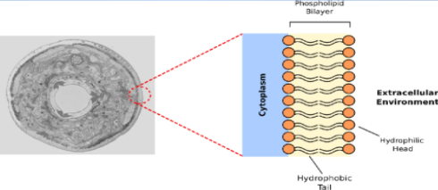
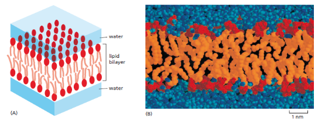
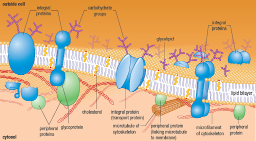
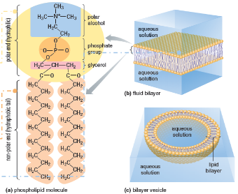
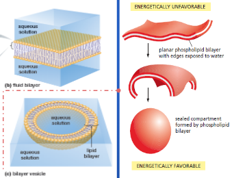

Membrane Structure and Function
Cell Membrane
A living cell is a self-reproducing system of molecules held inside a container called a Plasma Membrane.
-
It acts as a physiological barrier separating the inside environment of a cell from the outside environment.
-
It protects and preserves the organelles and the chemical components from the external environment.
-
It controls and regulates exchanges between the cell and its surroundings or internal fluids.
Callout

The lipid Bilayer
The major components of the plasma membrane are lipids arranged in two closely apposed sheets forming a lipid bilayer. Those lipids are majoratory amphipathic molecules called “phospholipids” made of two fatty acid tails, linked to glycerol, a phosphate group, and a choline. Because cells are filled with, and surrounded by, water; the way the lipid molecules act in such an environment determines the arrangements of the membrane components and the membrane structure.

Callout
The Fluid Mosaic Model
Except for the phospholipids, can you classify the components of the plasma membrane based on their biochemical nature and localisation in the membrane depending on the information's you can pull out of the picture below?

The plasma membrane acts as a barrier that allows some molecules such as water and nutrients essential for cell growth to pass freely into the cell whereas it blocks some others.
It eliminates wastes and delivers mature proteins in specific locations while preserving chemical compounds of the inner cell to come out or to be in contact with the external environment.
-
Small uncharged nonpolar small molecules diffuse freely through the plasma membrane.
-
Uncharged polar molecules can diffuse through the plasma membrane if they are small enough.
-
Uncharged polar molecules diffuse hard and slowly if they are larger molecules.
-
Charged molecules cannot diffuse at all.
-
Millions of times a second, phospholipids inside of the bilayer; vibrate, flex back and forth, spin around their long axis, move sideways, and exchange places within the monolayer or, rarely, between the bilayer.
The fluidity ensured by the lipids enables the proteins to move freely and laterally in the bilayer but slowly since they are larger molecules. Some of them are even locked up and act as anchors and protein attachments.
Callout
The plasma membrane is composed of a wide assortment of proteins:
-
Enzymes included in biochemical pathways ,
-
Transporters such as ion channels,
-
Receptors with a specific binding sites that enclencher a signalisation cascade,
-
Recognition-interaction proteins that ensure interaction between extracellular matrix and surrounding cells and recognition of external signals,
-
Anchors that attach cytoskeleton filaments to the plasma membrane.
The bilayer differs in the amount of proteins, their organisations and their type. And therefore, it differs in the function. A range of glycolipids and carbohydrate groups attached to proteins on the external half of the membrane, whereas components of the cytoskeleton bind to proteins on the internal half of the membrane.
Hormones and growth factors bind to receptor proteins that are found only on the external surface of the plasma membrane.
Multiple Choice
Timeline
-
Phospholipids
The phospholipids combine two very different properties in a single molecule: each lipid has a phosphate containing hydrophilic (“water-loving”) head linked to a pair of hydrophobic (“water-fearing”) tail.
hydrophilic molecules dissolve in water because they contain either charged groups or uncharged polar groups that form either electrostatic attractions or hydrogen bonds with water.
Hydrophobic molecules are insoluble in water because they contain uncharged and nonpolar groups; they cannot form interactions with water molecules. Instead, they force water molecules to reorganize into a cage-like structure around them.
The cage-like structure requires energy. This energy cost is minimized when the hydrophobic molecules cluster together, limiting their contacts with the surrounding water molecules.
-
How are phospholipids arranged?
Phospholipids are subject to two conflicting forces: the hydrophilic head bonds to water, while the hydrophobic tails aggregate with each other. This conflict is resolved by the formation of a lipid bilayer—an arrangement that is energetically most favorable. The hydrophilic heads face water on both sides of the membrane while the hydrophobic tails are all shielded from the water, as they lie next to one another in the interior.
The forces that formed the bilayer are also responsible for a self-sealing arrangement. Free edges of the bilayer exposed to water are energetically unfavorable and the lipids molecules will spontaneously rearrange to eliminate them. The bilayer will automatically bind and seal forming a closed compartment that creates a cell.

Multiple Choice
Multiple Choice
The way cholesterols arrange themselves within the phospholipids is presented on this picture:
1.png)
Proteins
The protein composition of the plasma membrane determines its function and thus the cell’s function. Some proteins are purely structural and others are functional molecules. The different types of functional proteins of the plasma membrane are presented in the picture below.
1.png)
Based on how are they organized inside of the bilayer, the proteins can be classify in two groups:
-
Integral proteins: are transmembrane proteins. They span the entire membrane and have regions that are exposed on both sides of the membrane.
-
Peripheral proteins: Are positioned on the surface of a membrane and do not interact with the hydrophobic core of the membrane.
-
Peripheral proteins are held to membrane surfaces by interacting with the exposed portions of integral proteins or lipid molecules. Most of them are on the cytosol side of the membrane, and some are part of the cytoskeleton such as; microtubules, microfilaments, intermediate filaments.
1.png)
Carbohydrates
The cell surface is coated with Carbohydrates which forms a sugar coating called the carbohydrate layer or glycocalyx made of:
-
Glycolipids: are lipids located in the outer layer of the plasma membrane have sugars covalently attached to them.
-
Glycoproteins: are proteins that have short chains of sugars, called oligosaccharides,
linked to them.
-
Proteoglycans: are membrane proteins that contain one or more long polysaccharide chains.
1.png)